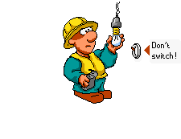

- Combien d'ingénieurs faut-il pour changer une ampoule ?
- Quatre. Un pour tenir l'ampoule, les autres pour savoir dans quel
sens tourner (un pour calculer l'action de la force de Coriolis, un pour
calculer les frottements dans la douille, et le dernier pour simuler tout
ça sous Matlab).
- Combien de rabbins orthodoxes ça prend pour changer une ampoule
?
- Changer ?
- Combien de psychiatres faut-il pour changer une ampoule ?
- Un seul, mais il faut que l'ampoule ait vraiment envie
de changer
.
- Combien de négationistes faut-il pour changer une ampoule ?
- Aucun, ils préfèrent nier qu'elle est éteinte.
- Combien faut-il de condamnés à mort pour remplacer une
ampoule ?
- Aucun, évidemment. Il n'y a guère que Georges W. Bush
pour croire encore que l'on peut s'éclairer au condamné à
mort !
- Combien de communistes faut-il pour changer une ampoule ?
- Un, mais il lui faut soixante ans pour s'apercevoir qu'elle est grillée.
- Combien faudra-t-il d'informaticiens pour changer une ampoule le 1er
janvier 2000 à 0 h 00 ?
- Très exactemglskspfrtzzzFATAL ERROR, Redo
from start...
- Combien de Français faut-il pour changer une ampoule ?
- Ils n'ont pas besoin d'ampoules, ils brillent dans le noir.
- Combien de jurés du procès d'O.J. Simpson faut-il pour
changer une ampoule ?
- Aucun ne croit qu'elle ait grillé.
- Combien de programmeurs de chez Micro$oft® faut-il pour changer
une ampoule ?
- Aucun, Bill Gates définit Micro$oft® Total Obscurity®
comme nouveau standard.
- Combien de programmeurs de chez Micro$oft® faut-il pour changer
une ampoule ? (bis)
- Aucun, Bilou tient l'ampoule et le monde tourne autour de lui.
- Combien de surréalistes faut-il pour changer une ampoule ?
- Un poisson au pneu brûlé, et trois girafes mauves..
- Combien de fans de Gotlib et de la "Rubrique à Brac" faut-il
pour changer une ampoule ?
- Trois : un pour monter dévisser l'ampoule, et un pour lui
crier de s'accrocher à la douille, il enlève l'échelle,
plus Isaac Newton pour se prendre tout sur la tête et en déduire
la loi de l'attraction universelle (plus, évidemment, la petite
bête coccinelloïde pour faire des commentaires désobligeants).
- Combien de blondes faut-il pour changer une ampoule ?
- Aucune, il ne faut surtout pas les laisser faire, elles casseraient
tout avec le marteau.

- Combien de blondes faut-il pour changer une ampoule ? (bis)
- Deux : une pour prendre un verre de Pepsi Diet, l'autre pour appeler
"Papa !"
- Combien de programmeurs en C faut-il pour changer une ampoule ?
- Six. Le premier pour le faire, les cinq autres six mois plus tard
pour comprendre l'algorithme.
- Combien de programmeurs en C++ faut-il pour changer une ampoule ?
- Aucun. Vous pensez toujours de façon procédurale :
un objet Ampoule correctement instancié héritera d'une méthode
Change d'un des ancêtres de la classe Lightbulb, donc il suffira
d'émettre un message Change.
- Combien faut-il d'adeptes du jeu Des chiffres et des lettres
pour changer une ampoule ?
- Cinq.
- Sept.
- Huit.
- Pas mieux...
- Combien d'hommes faut-il pour changer une ampoule ?
- Cinq. Un pour l'enfoncer avec un marteau, quatre pour l'emmener ensuite
à l'hôpital.
- Comment une enfant gâtée change-t-elle une ampoule ?
- "Papa, je veux un nouvel appartement !"
- Combien de machos faut-il pour changer une ampoule ?
- Aucun. La salope peut bien faire la cuisine dans le noir.
- Combien faut-il de salopes pour faire la cuisine dans le noir ?
- Aucune, la dernière s'est tirée avec le voisin du dessous.
Le macho mange des chips.
- Combien de femmes faut-il pour changer une ampoule ?
- Quatre. Une pour appeler son mari au bureau en lui disant de rentrer
à la maison en toute vitesse et les trois autres pour parler dans
le dos de celle qui est partie téléphoner.
- Combien faut-il de fans de la série Friends pour remplacer
une ampoule ?
- Un grand nombre, car ce ne sont vraiment pas des lumières
!
- Combien de maris faut-il pour changer une ampoule ?
- On le saura dès qu'il se sera levé du divan et qu'il
aura lâché sa canette.
- Combien d'amibes faut-il pour changer une ampoule ?
- 2, non 4, non 16, zut ! 32, 64, 128, 256 ....
- [1994] Combien de concepteurs du Pentium de chez Intel faut-il pour
changer une ampoule ?
- 0,99956822301...
- Combien de plombiers faut-il pour changer une ampoule ?
- Trois. Un pour la changer, et deux autres pour emmener l'électrocuté
à l'hôpital.
- Combien de commerciaux de Micro$oft® faut-il pour changer une
ampoule ?
- Huit. Un pour la changer, et sept pour s'assurer que Micro$oft®
touche bien $ 2.00 pour toute ampoule changée à travers le
monde.
- Combien de mécaniciens auto faut-il pour changer une ampoule
?
- Un. Mais il change tout le lustre.
- Combien de joueurs de jeux de rôle faut-il pour changer une
ampoule ?
- 1D6+2
- Combien de joueurs de foot faut-il pour changer une ampoule ?
- Onze. Un pour la changer, et dix pour lui sauter dessus de bonheur
en hurlant.
- Combien de programmeurs faut-il pour changer une ampoule ?
- Aucun, c'est un problème de hardware. Et si ça ne l'est
pas, il vaut mieux laisser ça, plutôt laisser une pièce
noire que de risquer qu'ils fassent s'effondrer tout l'immeuble.
- Combien de chômeurs faut-il pour changer une ampoule ?
- Aucun, sinon c'est considéré comme un travail et l'ANPE
les raye des statistiques.
- Combien de chirurgiens faut-il pour changer une ampoule ?
- Inutile. Ils sauvent l'ampoule par une greffe de filament.
- Combien faut-il de têtes de liste aux européennes pour
changer une ampoule ?
- Deux : un mari inéligible et une épouse incompétente.
Et si l'ampoule n'est pas contente, on y latte la gueule à c'te
métèque, ça va être vite vu !
- Combien d'anarchistes faut-il pour changer une ampoule ?
- Aucun. De toute façon, ils écrasent la douille.
- Combien de belle-mères ça prend pour changer une ampoule?
- Une bonne centaine : une pour la changer, et les autres 99 pour asséner
"Je te l'avais bien dit!"
- Combien d'intégristes catholiques faut-il pour changer une
ampoule ?
- Aucun. La Sainte Bible ne parle pas des ampoules.
- Combien de mariés faut-il pour changer une ampoule ?
- Deux : un mari pour changer l'ampoule, une épouse pour rallumer
la lumière un poil trop tôt.
- Combien de Talibans afghans faut-il pour changer une ampoule ?
- Aucun. Ils les ont interdites. De toute façon l'électricité
est satanique.
- Combien de soldats serbes bosniaques faut-il pour changer une ampoule
?
- Si elle est serbe, un. Si elle est musulmane ou croate, trois : un
pour la violer, un pour l'écraser, et un pour apporter une ampoule
serbe.
- Combien de pessimistes faut-il pour changer une ampoule ?
- Quelle importance ? De toute façon la nouvelle claquera aussi
un jour...
- Combien faut-il de pessimistes pour changer une ampoule ? (bis)
- A quoi bon se poser la question ? Un seul, deux, dix ou cent, je
doute fort qu'ils y parviennent de toute façon...
- Combien de sado-masochistes faut-il pour changer une ampoule ?
- Deux. Un pour la changer, un autre pour donner un coup de pied dans
la chaise pendant ce temps.
- Combien faut-il de "hotliners" Micro$oft pour changer une ampoule
?
- Quatre :
- Combien de spéculateurs boursiers faut-il pour changer une
ampoule ?
- 24 1/8, mais ça a baissé de 1/4 depuis hier.
- Combien faut-il de super-héros pour changer une ampoule ?
- SHAZAMMMM !!! VZAP ! DAMN'IT !!! PIF ! PAF ! BRAOUUUUM !!! GOT ONE
!!! FLUSHHHHH !!! MEGA-MAXI-GROS-HYPER-MEHAMEHAAAAAAAAA !!! BY JOVE ! VROUUUUUUUUUM
!!! SPLASH ! CRACK !!! NUK'M ALL, BOYS !!! BANG ! Re-BANG !! ONE MORE MISSION
FOR SUPY ! HE ! HE !
(Quelqu'un peut essayer de compter, là ? J'ai un peu mal
à la tête ...)
- Combien d'ayatollahs faut-il pour changer une ampoule ?
- Aucun, ils préfèrent rester dans l'obscurantisme.
- Combien de catholiques romains faut-il pour changer une ampoule ?
- Deux. Un pour la changer, un pour s'en repentir.
- Combien de Belges faut-il pour changer une ampoule ?
- Sans importance. Le temps qu'ils comprennent, il fera déjà
jour.
- Combien de membres du CNRS faut-il pour changer une ampoule ?
- Dix-sept. Un pour la changer, mais avant il a fallu un thésard
pour prendre l'initiative, un directeur de recherche pour faire le bon
d'achat, un directeur de labo pour le signer, une secrétaire pour
le transmettre...
- Combien d'ingénieurs ENSIC faut-il pour changer une ampoule
?
- Aucun, il n'y a pas de poly à ce sujet. A la rigueur, on peut
tenter de trouver une corrélation à 100% près...
- Combien d'instituteurs faut-il pour changer une ampoule ?
- Aucun, car :
* Il n'y a pas de crédits pour ça,
* Ils ne sont pas couverts par l'assurance scolaire en cas d'accident,
* Ils n'ont pas reçu la formation adéquate.*
- Combien de Présidents de la République Française faut-il pour changer le bulbe qui fait de la lumière ?
- Un, mais il faudra lui dire que ça s'appelle une ampoule.
- Combien de députés faut-il pour changer une ampoule
?
- Vingt, pour créer une commission adéquate.
- Combien de New-Yorkais faut-il pour changer une ampoule ?
- 50. 50 ? Yeah 50, c'est dans le contrat.
- Combien de clones faut-il pour changer une ampoule ?
- Autant que vous voulez. Autant que vous voulez. Autant que vous voulez.
Autant que vous voulez. Autant que vous voulez. Autant que vous voulez.
Autant que vous voulez. Autant que vous voulez...
- Quelles différences y a-t-il entre une ampoule brune, une ampoule blonde et une ampoule rousse ?
- Combien de surdoués faut-il pour changer une ampoule ?
- Aucun, mais ça marche quand même : c'est ça être
surdoué !
- Qu'arrive-t-il à une blonde qui essaie de changer une ampoule
?
- On retrouve son cadavre coincé à l'intérieur
de l'ampoule.
- Combien de "grands garçons" faut-il pour changer une ampoule
?
- Aucun. Les grands garçons n'ont pas peur du noir.
- Combien d'hommes divorcés ça prend pour changer une
ampoule ?
- Personne ne sait, ce n'est jamais eux qui obtiennent la maison.
- Combien de Québequois faut-il pour changer une ampoule ?
- Aucun, l'ampoule est innocente, c'est la ligne électrique
qui a été rompue par la glace.
- Combien d'alchimistes ça prend pour changer une ampoule ?
- La changer en quoi ?
- Combien d'avocats faut-il pour changer une ampoule ?
- Ca dépend combien vous pouvez payer.
- Combien d'avocats faut-il pour changer une ampoule ? (bis)
- Deux : un pour la changer, un autre pour crier "Objection !"
- Combien d'avocats faut-il pour changer une ampoule ? (ter)
- Soixante-cinq : quarante-deux pour attaquer EDF en justice à
cause de la surtension qui a grillé l'ampoule, quatorze pour poursuivre
l'électricien qui a monté l'installation électrique,
neuf pour poursuivre le fabricant de l'ampoule... et aucun pour la changer.
- Combien de connards du FN (pléonasme) faut-il pour changer
une ampoule ?
- Un, mais il faut qu'il se dépêche, ils n'aiment pas
le noir.
- Combien faut-il de professeurs pour changer une ampoule ?
- Tous ceux qui sont présents dans l'établissement ce
jour-là :
* Un qui change l'ampoule,
* Tous les autres qui regardent opérer le bricoleur de génie.
- Combien faut-il de programmeurs OS/2 pour changer une ampoule ?
- Aucun, c'est un problème de drivers.
- Combien de marxistes faut-il pour changer une ampoule ?
- Aucun, l'ampoule contient la graine de sa propre révolution.
- Combien de survivants de la Guerre Atomique faut-il pour changer une
ampoule ?
- Aucun. Les gens qui brillent dans le noir n'ont pas besoin d'ampoule.
- Combien de témoins de Jéhovah faut-il pour changer une
ampoule ?
- Les deux.
- Combien de pervers ça prend pour changer une ampoule ?
- Juste un, mais après il faut toute l'équipe chirurgicale
des urgences de l'hôpital pour la retirer !
- Combien d'économistes libéraux faut-il pour changer
une ampoule ?
- Aucun. Si le gouvernement la laissait en paix, l'ampoule se revisserait
toute seule.
- Combien de féministes hystériques américaines
faut-il pour changer une ampoule ?
- Ce n'est pas drôle !!
- Combien faut-il de fufeurs
pour changer une ampoule ?
- 80 de plus que ceux qui préfèrent rester dans le noir.
- Combien pour changer une ampoule ?
- Combien d'ingénieurs de centrale nucléaire faut-il pour changer une ampoule ?
- Six. Un pour changer l'ampoule, et cinq pour décider que faire
de l'ancienne dans les 100 000 prochaines années.
- Combien de plaisantins faut-il pour changer une ampoule ?
- Quatre. Un pour la changer, trois pour enlever l'échelle entre-temps.
(politically correct)
- Combien de personnes appartenant à un certain groupe ethnique
cela prend-il pour réaliser une tâche particulièrement
facile ?
- Un nombre entier positif. Un pour réaliser la tâche
dont il est question, et le reste pour se comporter selon les clichés
communément admis pour ce groupe ethnique.
- Combien de fonctionnaires du CEA faut-il pour changer une ampoule
?
- Douze :
-Combien de Chrétiens faut-il pour changer une ampoule ?
- Trois, mais ils ne font qu'un.
- Combien de Japonais faut-il pour changer une ampoule ?
- Aucun. Ils ont un robot pour ça.
- Combien d'administrateurs système faut-il pour changer une
ampoule ?
- Ca dépend du système d'exploitation de l'ampoule.
- Combien de murphystes faut-il pour changer
une ampoule ?
- Deux, car ils doivent désigner celui qui s'en chargera en
tirant à pile ou face avec une tartine
de pain beurrée.
- Combien de murphystes faut-il pour changer
une ampoule ? [bis]
- Un de plus que prévu et que vous n'en avez sous la main. De
toute façon l'ampoule se cassera.
- Combien de Carl Sagan faut-il pour changer une ampoule ?
- Des millions et des millions.
- Combien d'extra-terrestres faut-il pour changer une ampoule ?
- Aucun. Leur doigt brille dans le noir.
- Combien de chanteurs de folk faut-il pour changer une ampoule ?
- Deux : un pour la changer, et un pour faire une chanson sur l'ancienne
ampoule qui était si bonne.
- Combien de républicains américains faut-il pour changer
une ampoule ?
- Aucun : cette ampoule marchait très bien il y a 70 ans, il
n'y a pas de raison qu'elle ne marche pas maintenant.
- Combien de gorilles faut-il pour changer une ampoule ?
- Un seul, mais il faut beaucoup d'ampoules...
- Combien de dieux faut-il pour changer une ampoule ?
- Deux. Un pour tenir l'ampoule, et un pour faire tourner l'univers
autour.
- Combien de fonctionnaires fédéraux américains
du Budget faut-il pour changer une ampoule ?
- Aucun : y a plus de crédits !
- Combien faut-il d'avocats pour changer une ampoule ? (quarto)
- Combien pouvez-vous vous en permettre ?
- Combien de bureaucrates faut-il pour changer une ampoule ?
- Deux : un pour assurer au public que tout ce qui est humainement
possible est entrepris, et un pour tenter de visser l'ampoule dans le robinet.
- Combien de fonctionnaires faut-il pour changer une ampoule ?
- Quarante-cinq : un pour changer l'ampoule, quarante-quatre pour remplir
la paperasse.
- Combien de nécrophiles faut-il pour changer une ampoule ?
- Aucun, les nécrophiles préfèrent l'ampoule morte.
- Combien de plaisantins faut-il pour changer une ampoule ?
- Un seul. " Au fait, tu pourrais tester la prise en mettant tes doigts
dedans pendant que je vais chercher une nouvelle ampoule ? "
- Combien de consultants d'entreprise faut-il pour changer une amoule
?
- A combien pensez-vous ?
- Combien de marines américains faut-il pour changer une ampoule
?
- Cinquante : un pour la changer, et quarante-neuf pour le couvrir.
- Combien de pygmées faut-il pour changer une ampoule ?
- Au moins trois, à la courte échelle.
- Combien faut-il d'hommes politiques pour changer une ampoule ?
- Puisque vous me demandez des chiffres, je vais vous en donner. Mais
tout d'abord permettez-moi de ...
- Combien d'astronomes faut-il pour changer une ampoule ?
- Aucun. C'est toujours ça en moins pour la pollution lumineuse.
- Combien faut-il de sauteurs à la perche pour changer une ampoule
?
- Avec beaucoup d'entraînement et un peu de chance, un seul peut
suffire, surtout s'il a droit à trois essais. Mais entre nous, avec
un escabeau, ce serait tout de même plus facile !
- Combien de Vulcains (M. Spock) faut-il pour changer une ampoule ?
- Très approximativement 1,0000000000000000000.
- Combien de programmeurs de sharewares faut-il pour changer une ampoule
?
- Un, mais l'ampoule ne marchera qu'à demi-puissance ou pendant
un mois seulement, sauf si vous vous enregistrez.
- Combien de trotskistes faut-il pour changer une ampoule ?
- Ca ne sert à rien de la changer, il faut l'écraser.
- Combien ça prend de moi pour changer une ampoule ?
- Deux : je suis schizophrène :-)
- Combien faut-il d'électriciens pour changer une ampoule ?
- Un, et il le fait très bien, mais ça vous coûtera
350 balles.
- Combien de mecs ça prend pour changer un rouleau de papier
toilette ?
- Personne ne sait... Ça n'est jamais arrivé.
- Combien de maires nazillons de villes du sud de la France dont le
nom commence par un V ça prend pour changer une ampoule?
- Aucun. Les subventions aux ampoules électriques subversives
ont été rayées du budget. Il faut revenir aux bougies
qui sont le symbole de l'éclairage traditionnel et qui reflètent
bien la grandeur de la France.
- Combien de mutants ça prend pour changer une ampoule ?
- Deux tiers car il n'a besoin que de trois mains pour le faire.
- Combien de politiciens ça prend pour changer une ampoule ?
(bis)
- Vingt-et-un :
- Combien de maniaco-dépressifs ça prend pour changer
une ampoule ?
- Un seul, mais il va bien remettre en place la vieille ampoule une
vingtaine de fois après avoir vissé la nouvelle pour être
vraiment sûr sûr que l'ancienne est grillée.
- Combien de temps faut-il à Claude François pour changer
une ampoule ?
- Ca doit bien faire 17 ans maintenant...
- Combien de psychanalystes de l'École Freudienne ça prend pour changer une ampoule ?
- Deux. Un pour changer l'ampoule, et un autre pour tenir le pénis...
! ...je veux dire l'échelle !
- Combien faut-il de Fils de Dieu pour changer une Ampoule ?
- Le problème n'est pas là. Un seul suffit largement.
La question est surtout de savoir quoi faire des 5999 ampoules en surnombre
après la multiplication miraculeuse du modèle original, ressucité
comme il se doit.
- Combien d'ampoules ça prend pour changer Mac Gyver en torche
éclairante ?
- Une seulement, si on la remplit avec du napalm.
Recette de l'ampoule électrique au napalm façon Mac
Gyver:
* Chauffez précautionneusement la base d'une ampoule de 100
W (ou moins)
* Retirez délicatement l'embout métallique et la partie
interne de l'ampoule
* Remplissez l'ampoule à moitié avec (CENSURE)
* Compléter au 3/4 avec du (CENSURE)
* Refermez l'ampoule en collant la base sur le verre au moyen de (CENSURE)
(assurez-vous qu'il y a assez de mélange dans l'ampoule pour (CENSURE))
* Attendez (CENSURE) heures.
* Vissez l'ampoule sur une douille
* Branchez le courant et appréciez sans modération
(Il s'agit d'une blague : N'essayez surtout
pas de faire cette manip !!!!)
- Combien faut-il d'intégristes algériens pour changer
une ampoule ?
- Il en faut 26 :
- Combien de politiciens faut-il pour changer une ampoule ?
- Aucun, car la lumière est au bout du tunnel...
- Combien faut-il de techniciens du son pour changer une ampoule ?
- 50. 1 pour la changer et 49 pour dire : "Ah! j'aurais fait ça
autrement !"
- Combien d'avocats faut-il pour changer une ampoule ? (cinquième
!)
- Ca dépend du cabinet :
- Combien d'anarchistes faut-il pour changer une ampoule ?
- Tous, aucun ne veut déléguer.
- Combien de militants de Lutte Ouvrière faut-il pour changer
une ampoule ?
- Deux : un pour la changer, un pour distribuer les tracts.
- Combien faut-il de Verts pour changer une ampoule ?
- Aucun, il faut revenir à la bougie... Ah non, ça émet
du CO2. Donc d'accord pour l'ampoule, mais alors en
verre recyclé. Et surtout pas alimentée par une centrale
nucléaire. Pas par une centrale à charbon non plus, c'est
polluant. Par une éolienne ? Ah non c'est trop cher...
- Combien de fanas d'Unix faut-il pour changer une ampoule ?
- Autant que vous voulez, de toute façon c'est virtuel. Y a
pas un daemon pour s'en occuper, au fait ?
- Combien faut-il de "Men In Black" pour changer une ampoule ?
- D'abord personne ne comprend de qui ou de quoi vous voulez parler.
Ensuite, ils n'existent pas.
Et au cas où vous découvririez la réponse, veuillez
regarder la petite lumière rouge là...
- Combien faut-il de magiciens pour changer une ampoule ?
- Ca dépend en quoi vous voulez la changer.
- Combien de kamikazes faut-il pour changer une ampoule ?
- Un. Ah non, zut ! deux... Non, pardon, trois... Et merde, quatre
!.. Autant pour moi, cinq... Et de six !... Rectification, sept... Beau
tir groupé, huit, neuf, dix... Et de onze !... Suivant !
- Combien de scientifiques faut-il pour changer une ampoule ?
- Aucun : ils ne changent pas l'ampoule mais cherchent les causes du
grillage de l'ancienne.
- Combien de managers faut-il pour changer une ampoule ?
- Deux : un pour tenter de la changer et la laisser tomber, et un pour
décrocher son téléphone pour appeler un subordonné
pour la changer.
- Combien d'artistes modernes faut-il pour changer une ampoule ?
- Quatre : un pour en lancer une dizaine contre un mur, un pour en
piler un centaine sur une toile et l'arroser de peinture orange, un pour
les fondre sur un morceau de fromage pourri, et un pour remplir une pièce
d'ampoules sous les regards des critiques et des chéquiers.
- Combien de webmasters faut-il pour changer une ampoule ?
- 404.
- Combien de Normands faut-il pour changer une ampoule ?
- Ça dépend.
- Combien de millionnaires faut-il pour changer une ampoule ?
- Un millionnaire ne change pas l'ampoule, il change de demeure.
- Combien de paparazzi faut-il pour changer une ampoule ?
- Ils sont trop occupés à photographier la tragédie.
D'ailleurs, plus besoin d'ampoule avec tous ces flashs.
- Combien d'ampoules faut-il pour changer une ampoule ?
- Deux (la remplacée et la remplaçante) si vous ne faites
pas de blagues.
- Combien de Parisiens faut-il pour changer une ampoule ?
- Un. Il tient l'ampoule neuve dans la douille et l'univers tourne
autour de lui.
- Combien de Québécois faut-il pour changer une ampoule
?
- Hors hiver, un. En hiver, aucun car il est impossible de griller
une ampoule quand on n'a pas d'électricité.
- Combien de blondes secouristes faut-il pour changer une ampoule ?
- Aucune, elle lui ferait du bouche à bulbe !
- Combien de maoïstes faut-il pour changer une ampoule ?
- Aucun, elle doit faire son autocritique.
- Combien de sales bougnoules faut-il pour changer une ampoule ?
- Cinq : un pour la tenir, les autres pour tourner les quatre pieds
de la table ?
- Combien de Jean-Marie Le Pen faut-il pour changer une ampoule ?
- Aucun : on se servira du courant pour la gégène.
- Comment Lucien Jeunesse fait-il pour changer une ampoule ?
- A deux mains, si vous le voulez bien !
- Combien faut-il d'auteurs de SF français pour changer une ampoule
électrique ?
- On ne change jamais UNE ampoule électrique a la fois. On attend
d'être complètement dans le noir et puis on fait une anthologie
!
- Combien de chiens ça prend pour changer une ampoule ?
Border Collie : Moi, ça suffira. Et je remplacerai toute installation électrique qui aura décidé de ne plus suivre la loi d'Ohm.
Teckel : Je ne saurai jamais atteindre cette lampe à la con !
Caniche nain : Tout ce que je vais faire, c'est en souffler deux mots à l'oreille du Border collie, comme ça, il fera le travail à ma place. D'ici à ce qu'il change l'ampoule, mes ongles seront secs.
Rottweiler : C'est pas toi qui va me donner un ordre ! Tu veux ma photo ?!
Shih-tzu : Ouahhhh, tout ça est bien trop fatigant. Je vais retourner faire ma sieste. Laissons faire les domestiques.
Labrador : Oh, moi, moi !!! S'te plaît !!!! Laisse-moi changer l'ampoule ! Je peux ? Je peux ? Hein ? Hein ? Dis ?
Malamute : Laissons faire le Border collie. Tu n'auras qu'à me donner à manger pendant qu'il est occupé.
Cocker Spaniel : Pourquoi la changer ? Je peux continuer à pisser sur le tapis dans le noir.
Pinscher : Pendant qu'il fait noir, je vais pouvoir aller dormir sur le lit.
Mastiff : Les Mastiffs n'ont PAS peur du noir.
Colley : ZZZZZZZZZZZZZZZZZZZZZZ
Chihuahua : Yo quiero Taco Bulb.
Irish Wolfhound : Est-ce que quelqu'un d'autre peut le faire ? J'ai la gueule de bois.
Pointer : Je la vois, elle est là, là, juste là.
Greyhound : Ça ne court pas une ampoule, alors rien à battre !
Berger australien : Après avoir changé l'ampoule, je la mettrai avec les autres, et elles formeront toutes un joli cercle.
Westie : Si le Border Collie se dépêche de changer l'ampoule, j'aurai juste le temps d'aller faire un trou pour l'enterrer.
Beauceron : Je m'en vais lui mordre le jarret à c't'ampoule. Elle finira par marcher droit !
Matin de Naples : Ampoule ? Ampoule ? Cette chose que je viens de manger était une ampoule ?
Retour à la page humour.